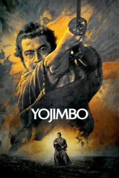

Also known as:用心棒 (original title)
Country:Japan, 110 minutes
Spoken languages:
Genres:Drama, Thriller
Director(s):Akira Kurosawa
Writer(s):Akira Kurosawa, Ryûzô Kikushima
Video Codec:Unknown
Number: 2056


Certification:NR
Storyline:
A nameless ronin, or samurai with no master, enters a small village in feudal Japan where two rival businessmen are struggling for control of the local gambling trade. Taking the name Sanjuro Kuwabatake, the ronin convinces both silk merchant Tazaemon and sake merchant Tokuemon to hire him as a personal bodyguard, then artfully sets in motion a full-scale gang war between the two ambitious and unscrupulous men.
Cast:

Medium: Original DVD,
Comments: w/ Sanjuro
Loaned: No
Aspect ratio: Unknown